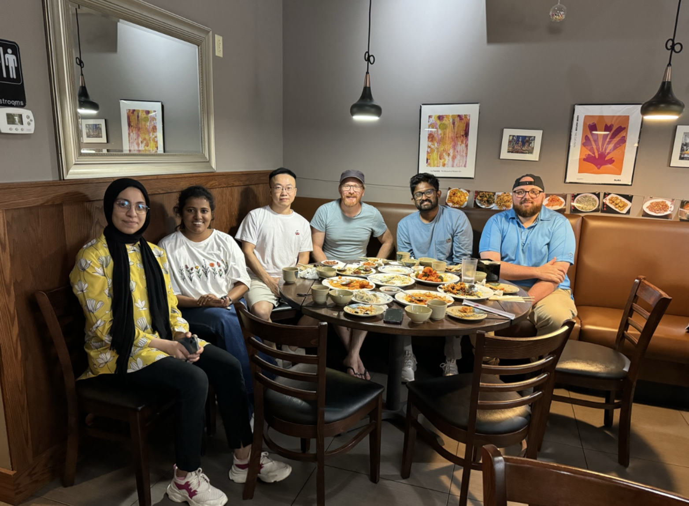

<main class="section">
  <div class="container">
    <h1>People</h1>
    <p class="muted">Graduate students currently or recently advised in the Thomay Lab.</p>

    <figure style="margin:1rem 0 1.5rem; padding:0;">
      
      <figcaption class="muted" style="font-size:.85rem;margin-top:.4rem;">Thomay Lab members | Photo © Tim Thomay</figcaption>
    </figure>

    {%- for section in people.sections %}
    <h2>{{ section.heading }}</h2>
    <div class="cards">
      {%- for person in section.people %}
      <article class="card">
        <h3>{{ person.name }}</h3>
        <p>{{ person.role }}</p>
        <ul class="meta">
          {%- for link in person.links %}
          <li><a href="{{ link.url }}">{{ link.label }}</a></li>
          {%- endfor %}
        </ul>
      </article>
      {%- endfor %}
    </div>
    {%- endfor %}

    <figure style="margin:2rem 0 1rem; padding:0;">
      
      <figcaption class="muted" style="font-size:.85rem;margin-top:.4rem;">Lab research in action | Photo © Douglas Levere, University at Buffalo, November 2023</figcaption>
    </figure>
  </div>
</main>
